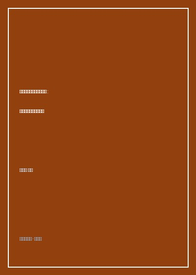

让脑瘫儿童拥有幸福人生

8.5
★★★★☆
豆瓣评分 · 2,900 人评价
资深儿科康复专家王雪峰专为特殊儿童家庭编写的实用照护全书，融汇运动康复、语言训练、心理赋能与社会融入的科学方案。
总体观点
《让脑瘫儿童拥有幸福人生》是中国小儿脑瘫现代康复医学领域极具人文温度与实操价值的权威指南。作者王雪峰教授从事儿科临床与儿童神经康复工作数十年，深知脑瘫患儿家庭所承受的不仅是沉重的医疗经济负担，更有难以言说的心理创伤与社会偏见压力。
本书突破了‘脑瘫等于残疾废人’的传统绝望认知，明确指出：脑瘫是一种非进行性的大脑损伤，通过早期科学干预、日复一日的家庭物理与作业治疗，绝大多数患儿的运动功能和生活自理能力都能得到颠覆性的改善。全书强调‘家庭是最好的康复病房，父母是最好的治疗师’，为无数陷入绝境的特殊家庭点亮了一盏通往自立与尊严的明灯。
核心观点
-
1. 早发现早干预：抓住大脑神经可塑性的黄金窗口期
婴儿中枢神经系统在两岁前具有极强的代偿与重构潜力，早期异常姿势的纠正能有效预防不可逆骨骼畸形。
家长通过观察三个月宝宝是否双拳紧握拇指内扣、四肢发硬或过分瘫软，及早进行头颅核磁与发育评估，启动早期干预。 -
2. 家庭生活化康复优于机械的医院病房治疗
把枯燥的拉伸与功能训练无缝融入患儿穿衣、洗漱、吃饭与游戏等日常琐事中，能最大程度提高患儿配合度与训练效率。
在喂饭时引导痉挛型脑瘫患儿用勺子自主舀取食物，既完成了精细抓握的作业治疗，又极大建立了孩子的独立自尊心。 -
3. 全人理念：智力、言语与心理发展并重
运动障碍不等于智力低下，切不可因孩子肢体残疾而忽视其丰富的内在情感世界与正常的求知教育需求。
对于无法清晰发声的手足徐动型患儿，教导其使用图卡交流板与眼动输入设备，释放出惊人的诗歌创作与数学天赋。 -
4. 照护者的心理赋能与家庭支持系统构建
父母必须首先走出内疚自责与逃避否认的心理泥潭，夫妻同心、分担压力，才能支撑起漫长的康复马拉松。
加入家长互助社群，在资深志愿者的陪伴下宣泄悲伤，学习家庭理疗手法，将绝望转化为积极行动。 -
5. 走向融合：推动社会接纳与特殊儿童自主就业
康复的终极目标不是让孩子走得跟普通人分毫不差，而是让他拥有一技之长、自食其力并有尊严地融入主流社会。
经过多年针对性计算机技能培训，脑瘫青年成功入职互联网企业从事数据标注与文案撰写，赢得经济独立。
全书结构
-
第一篇 认识脑瘫：早期筛查与科学诊断的客观认知
全面解析小儿脑瘫的高危病因、常见分型（痉挛型、不随意运动型、共济失调型等）与早期警示征兆。
图文对照展示正常婴儿与肌张力异常婴儿的仰卧位、俯卧位姿势差异，指导家长识别‘剪刀步’与足下垂。 -
第二篇 运动康复：家庭物理疗法（PT）与姿势矫正训练
系统讲解翻身、坐位、爬行、站立与行走的家庭训练分解动作，如何使用矫形器具预防关节挛缩。
演示利用瑜伽大球为患儿进行骨盆倾斜与躯干平衡训练的正确力学扶持手法，避免二次拉伤。 -
第三篇 生活自理：作业疗法（OT）与精细动作进阶
聚焦手部功能康复，教导患儿掌握洗脸、刷牙、系纽扣、使用餐具等基础生活自理技能。
通过改装带加粗手柄的勺子和防滑餐盘，帮助严重震颤的孩子第一次独立喝完一整碗稀饭。 -
第四篇 语言与认知：唤醒特殊儿童的表达意愿与潜能
针对构音障碍、流涎与吞咽困难的口腔按摩手法，以及辅助沟通系统（AAC）的早期应用技巧。
详细指导冰块刺激与压舌板口腔操，帮助四岁患儿有效改善流涎并清晰喊出‘妈妈’。 -
第五篇 心理赋能：构筑家庭支持系统与全社会接纳之桥
患儿青春期心理健康引导、无障碍融合教育的争取途径，以及成人期社会保障与职业培训规划。
分享三个脑瘫青少年成功考入普通大学并完成就业的真实家庭案例，为广大病友家庭注入坚如磐石的希望力量。